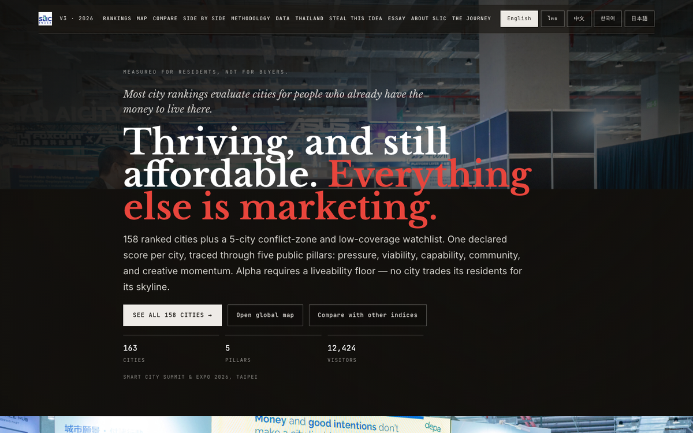

Taipei · City Vision Stage · March
2026
[EVENT_ID: SCSE_2026_TPE]
Live dashboard, demo'd in 45 minutes.
Keynote at the Smart City Summit & Expo. Working surface in the room, not concept art. SLIC went live during the talk: 157 cities, five pillars, adjustable ranking logic.
"We didn't build an index for the shelf. We built a command system for the street. You build the ranking; we build the reality."— Dr. Non, Taipei keynote
174
Cities indexed
53
Nations represented
3,000+
Intel partners
45m
First live demo
Keynote delivered at SCSE 2026 Taipei. Focus: rapid urban response, public dashboards, and cross-border data governance.
Live dashboard demonstration completed inside 45 minutes. Working surface, not concept art.
SLIC live: 157 cities, five pillars, adjustable ranking logic. Interest confirmed across mayoral and city-network audiences.
ENCRYPTED_TRANSMISSION // FIELD_01
“We didn't build an index for the shelf. We built a command system for the street. You build the ranking; we build the reality.”

